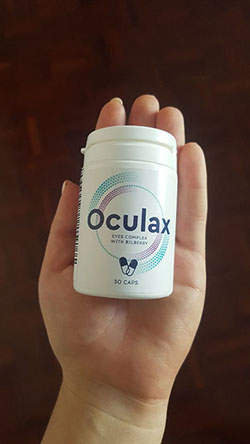
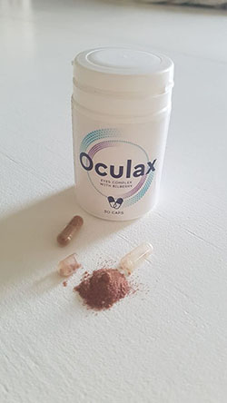

București, România. 26.01.2021 la Clinica Oftalmologică Oftalux a izbucnit un scandal despre care toți au aflat. Director șef adjunct, medic șef, precum și o serie de alți angajați ai clinicii acuză administrația, că împiedică în mod deliberat în instituția utilizarea unui medicament, care permite, fără intervenții chirurgicale, într-un mod complet terapeutic, să restabilească vederea la un nivel de 95-100%.
Un grup de oameni de știință au publicat o scrisoare deschisă care solicită "salvarea clinicii oftalmologice principale de lăcomie, corupție și înșelăciune".
Sub textul scrisorii au semnat:
- Adrian Vlada. Director șef adjunct pentru activitatea științifico-clinică și implementarea noilor tehnologii, doctor în științe medicale.
- Larisa Costache. Medicul șef al clinicii, profesor, doctor în științe medicale.
- Mihai Valeriu. Medicul principal al clinicii, oftalmolog cu experiență de 30 de ani, conferențiar universitar.
- Catalin Zamfir. Director al Centrului oftalmologic, profesor.
- Nitan Ovidiu. Oftalmolog, conferențiar universitar, profesor la Catedra boli oculare.
- Vlad Oncioiu. Oftalmolog, medic de categorie superioară. Și alții.
De asemenea, medicii au fost susținute de Fundația Internațională Oftalmologică „O privire pentru toți”.
Medicii susțin că administrația clinicii (în persoana directorului general Olivian Savencu și a directorului adjunct pentru activitatea organizațională Serban Marius) le interzice să utilizeze un nou medicament pentru a trata pacienții.
Motivul este reducerea numărului de operații ( în 86% din cazuri permite restabilirea vederii fără intervenții chirurgicale), ceea ce, la rândul său, duce la o scădere a veniturilor clinicii.
După cum a declarat unul dintre autorii acestei scrisori deschise, medic șef al Clinicii Oftalmologice Oftalux Larisa Costache, "astăzi, administrația clinicii aduce astfel de argumente, că fără venituri Centrul nu poate exista și în curând va intra în faliment. Dar nu e adevărat. Clinica este pe 90% din finanțarea publică de mai mulți ani. Veniturile din operații care nu sunt cele mai ieftine, merg, știți singuri unde!"
"Vreau să dau cifre care sunt întotdeauna mai convingătoare decât orice cuvânt - pentru anii - costul operațiilor în clinică și secții a crescut cu aproape 150%, iar numărul de operații - de 2 ori! Oamenii au mai mulți bani? Nu prea cred. Este doar o politică diferită acum - medicilor li se recomandă în secret să prescrie operații tuturor pacienților. Oamenii sunt dispuși să facă orice pentru a-și recâștiga vederea și, de aceea, deseori sunt de acord.
În același timp, puțini oameni știu, iar administrația clinicii împiedică în orice mod răspândirea acestor informații, că astăzi există un remediu modern, cu care puteți restabili vederea fără un laser și un bisturiu. Acest lucru a fost dovedit de numeroase studii clinice, precum și practica utilizării medicamentului din cadrul clinicii. Cu ajutorul acesteia, vederea este restabilită în majoritatea țărilor europene. Cum ar fi Germania, Franța, Marea Britanie și altele. Iar la noi până acum traumatizează oamenii prin intervenții chirurgicale, după care vederea începe din nou să scadă anul viitor.
La urma urmei, ce este o operație, aceasta este o intervenție în structură, este o cicatrice care persistă pentru viață. Da, ea nu se vede, dar acest loc este deja deteriorat! Din nou, puțini oameni știu că, în mai mult de 90% din cazuri, trebuie să facă o operație repetată timp de 3-5 ani, iar restabilește vederea fără intervenție chirurgicală și pentru totdeauna. De fapt, acesta normalizează toate procesele care apar în organele vizuale... Și ceea ce este cel mai ofensator acesta este un remediu al nostru, român. De ce pacienții noștri trebuie să sufere? Cred că administrația clinicii acționează cel puțin necinstit față de oamenii obișnuiți, iată de aceea colegii mei și cu mine am scris această scrisoare".
Citiți mai multe despre noul medicament pentru restabilirea vederii, care a provocat un scandal.
Autorul medicamentului este un renumit academician român, oftalmolog, care a dedicat toată viața tratării bolilor oculare - Bogdan Anghel. Bogdan Anghel rareori a dat interviuri și a apărut în public, preferând un laborator și propriul birou față de „lumina reflectoarelor popularităţii”. Prin urmare, puțini oameni știu ce contribuție la oftalmologia modernă a adus acest om de știință. Desigur, vorbim despre oameni obișnuiți, oamenii de știință, fără îndoială, îl cunosc pe Bogdan Anghel din descoperirile și publicațiile sale din revistele științifice.
Inițial dezvoltat de un om de știință și de colegii săi, medicamentul a fost numit "Vultur". Dezvoltarea sa a început încă în anul 2001, pe baza Universității de Medicină și Farmacie "Carol Davila".
Oamenii de știință au luat aproape 8 ani pentru a crea un medicament care a îmbunătățit semnificativ vederea fără intervenții chirurgicale prin creșterea tonusului mușchilor ochilor și eliminarea opacității cristalinului. Medicamentul ar putea fi utilizat pentru a trata boli oculare, cum ar fi:
- miopie,
- glaucom,
- cataractă,
- inflamație nervului optic,
- nevrită nervului optic,
- uveită,
- corioretinită,
- dezlipirea retinei,
- opacifierea corneei,
- blefarită,
- conjunctivită,
- retinită pigmentară,
- cheratită.
Și multe altele. Cu toate acestea, pacienții români nu au văzut niciodată medicamentul însuși.
La 2 decembrie 2010 a avut loc o tragedie - renumitul oftalmolog Bogdan Anghel a murit la 88 de ani în urma unui atac de cord.
După moartea omului de știință, nimeni nu i-a păsat de un medicament aproape gata făcut. Până atunci, el a trecut deja printr-o serie de studii clinice care au dovedit eficacitatea sa ridicată. Acest lucru a fost folosit de unul dintre angajații laboratorului, vânzând formula medicamentului pentru bani puţini la acel moment (având în vedere eficacitatea ridicată a medicamentului) către o corporație oftalmologică americană, care în 2 ani și-a stabilit producția sub un alt nume.
Numai în 2019, datorită eforturilor lui Irena Călugăreanu și a medicului-șef al Centrului Ştiinţific Florin Stan, cu mare dificultate a reușit să apere brevetul și să continue dezvoltarea mijlocului. Cu toate acestea, remediul în sine a avut unele modificări - în loc de tehnologii învechite și componente ineficiente, au început să folosească nutrienți ((vitamine și oligoelemente cu proprietăți antioxidante), care sunt importante pentru funcționarea sistemului de protecție a ochilor împotriva daunelor oxidative, de la razele nocive ale spectrului albastru al luminii solare. Datorită acestui fapt, a fost posibilă creșterea eficacității remediului cu încă 47%. Remediul actualizat a devenit cunoscut sub numele de „”.
Potrivit oamenilor de știință și medicilor, în 87% din cazurile de deteriorare a vederii „” vă permite să vă întoarceți vederea de 100% fără intervenție chirurgicală!
„Cursul poate fi efectuat la domiciliu - tot de ce aveți nevoie este să luaţi 2 capsule în timpul mesei cu un pahar de apă. După câteva zile de admitere, veți observa cum se îmbunătățește vederea”, spune unul dintre semnatarii scrisorii deschise despre remediu.

-
ZINC
Face parte din enzimele care reglează vederea în întuneric și ajută la adaptarea rapidă la lumină puternică, reducând efectul blițului strălucitor. -
CIANOCOBALAMINĂ
Oferă circulație normală a sângelui în ochi și funcționarea stabilă a fibrelor nervoase. -
TIAMINA
Este responsabilă pentru transmiterea neîntreruptă a impulsurilor nervoase între sistemul vizual și creier și, de asemenea, contribuie la normalizarea presiunii intraoculare. Protejează retina de foto-deteriorări. Oferă acuitate vizuală.
Compoziția remediului
„” include exclusiv componente naturale - vitamine și nutrienți necesari pentru funcționarea normală a organelor vizuale.
- Zinc. Ajută la îmbunătățirea vederii în întuneric și păstrează macula de necroză.
- Cianocobalamina. Contribuie la restabilirea circulației sângelui în ochi și la îmbunătățirea stării fibrelor nervoase ale aparatului ocular.
- Riboflavina. Ajută la îmbunătățirea circulației sângelui în vasele oculare, are un efect pozitiv asupra percepției culorilor și vederii nocturne.
- Tiamina. Contribuie la normalizarea presiunii intraoculare, este responsabilă pentru transmiterea neîntreruptă a impulsurilor nervoase între sistemul vizual și creier.
- Vitamina B12. Această vitamină este necesară pentru îmbunătățirea circulației sângelui în ochi. De asemenea, ajută la menținerea funcționării celulelor nervoase și îmbunătățește vederea generală.
În urma studiilor clinice, s-a dovedit că complexul promovează:
- prevenirea bolilor oculare, inclusiv miopie, glaucom și cataractă;
- restaurarea și păstrarea vederii;
- protecția vederii cu creșterea încărcăturilor vizuale (atunci când lucrați la calculator și impactul negativ al razelor soarelui);
- normalizarea presiunii intraoculare;
- protejarea cristalinului, inclusiv împotriva opacifierii;
- îmbunătățirea acuității vizuale;
- creșterea contrastului vizual;
- restaurarea celulelor deteriorate ale organului vizual;
- îmbunătățirea circulației sângelui în organele vizuale;
- ameliorează sindromul de ochi uscat (oboseala ochilor, mâncărime, roșeață, uscăciune, iritare).
Absolut orice locuitor al țării poate comanda LA UN PREȚ MINIM!
Pentru a dovedi eficiența ridicată a -ului, precum și pentru a se familiariza populația țării cu acesta, Asociația română de oftalmologi, care include majoritatea medicilor care au scris o scrisoare deschisă, distribuie medicamentul către populație la cel mai mic preț
Puteți încerca eficacitatea medicamentului singuri!
ORICE LOCUITOR DIN ROMÂNIA POATE COMANDA CU LIVRARE LA CEL MAI APROPIAT OFICIU POȘTAL!
Ce trebuie de făcut pentru asta?
- Să completați o cerere.
- Să așteptați apelul operatorului și indicați la ce adresă trebuie să fie livrat medicamentul.
- După 4-7 zile (necesare pentru livrare), trebuie să vă duceți la poștă și să obțineți medicamentul.
Timpul promoției este de la 16.03.2021 până la 01.04.2021 (în această perioadă trebuie să lăsați o cerere pentru a obține medicamentul, după care acesta poate fi cumpărat numai la valoarea de piață, care este destul de mare.)
Atenție! se termină repede!
Numărul de ambalaje disponibile scade rapid!
În prezent, în stoc au mai rămas:



